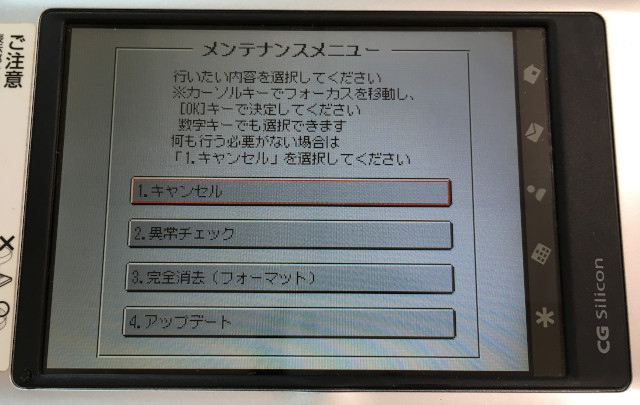
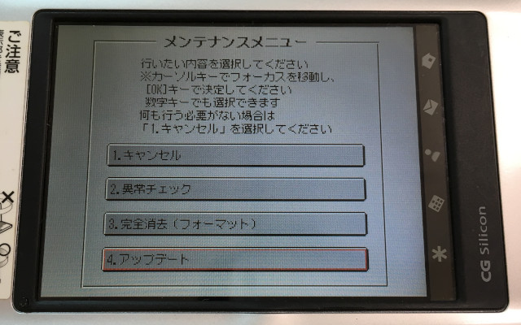
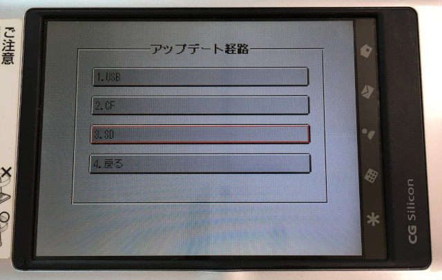
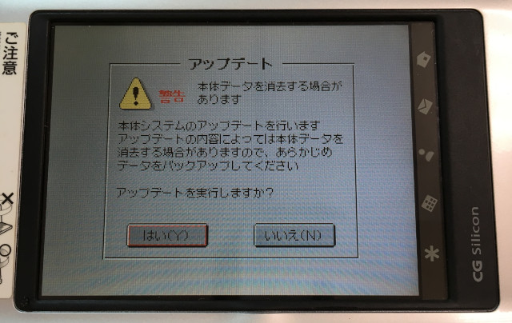
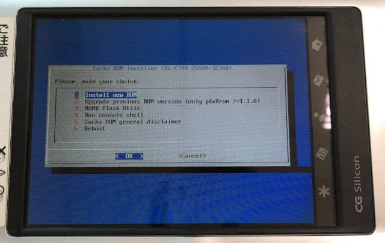
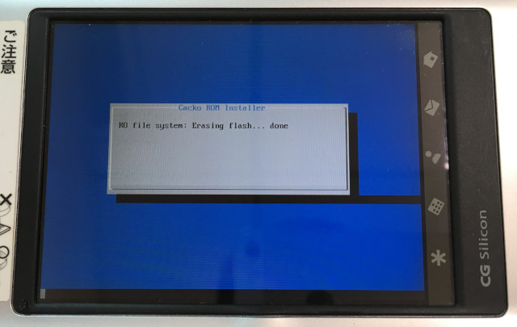
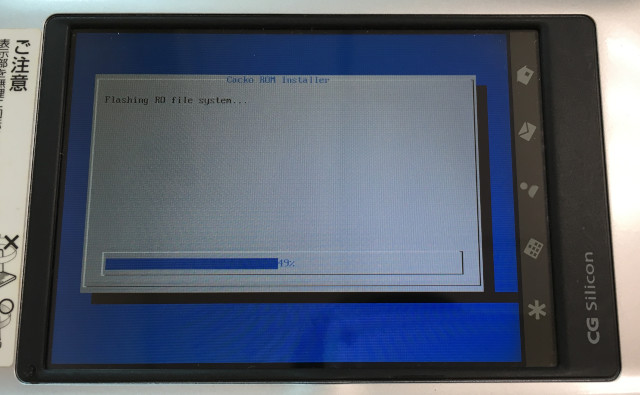
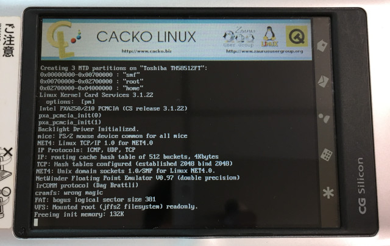
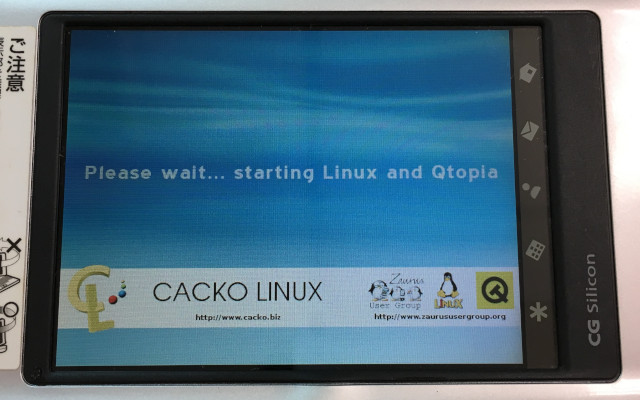
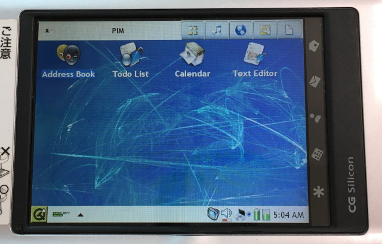

參考資訊：
https://feed-zaurus.dahwa.fr/zaurusfr/
步驟如下：
1. 下載https://github.com/steward-fu/website/releases/download/zaurus/cacko_SL-C700-Qtopia-1.23-1029311005.zip
2. 格式化SDCard(1GB)成FAT16檔案系統且不要有磁碟標籤
3. 將SL-C700-Qtopia-1.23-1029311005.zip解壓縮至SDCard根目錄
4. 將SDCard插入機器
5. 按住OK並且開機









